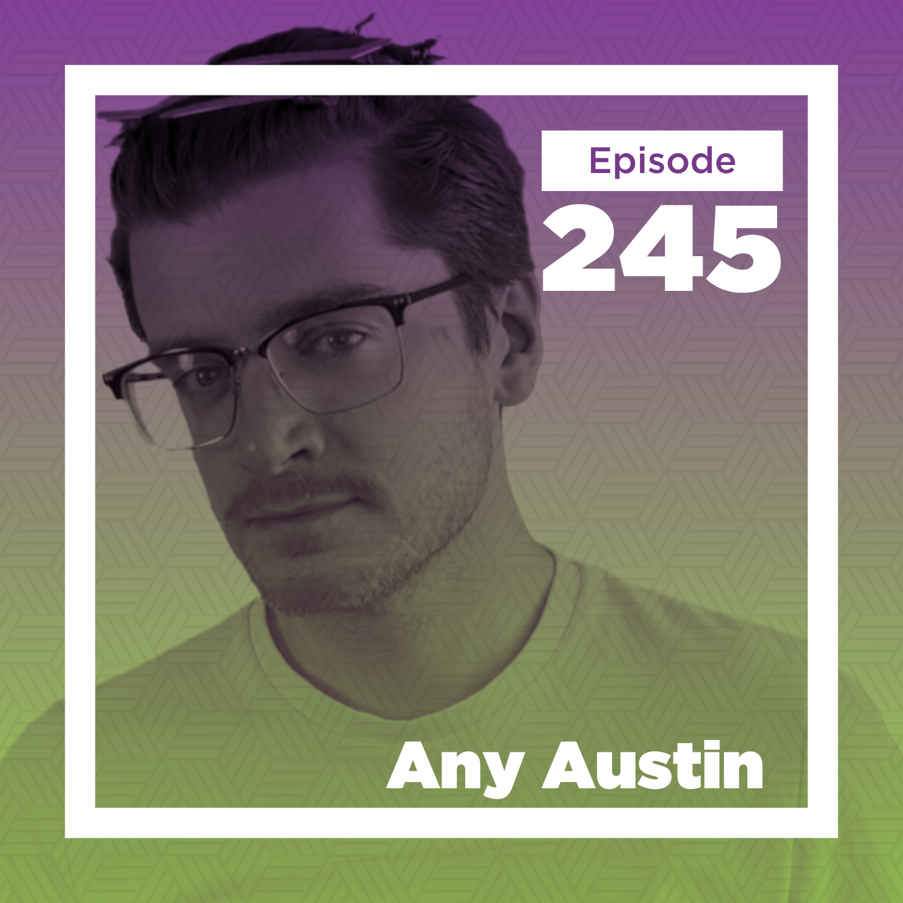
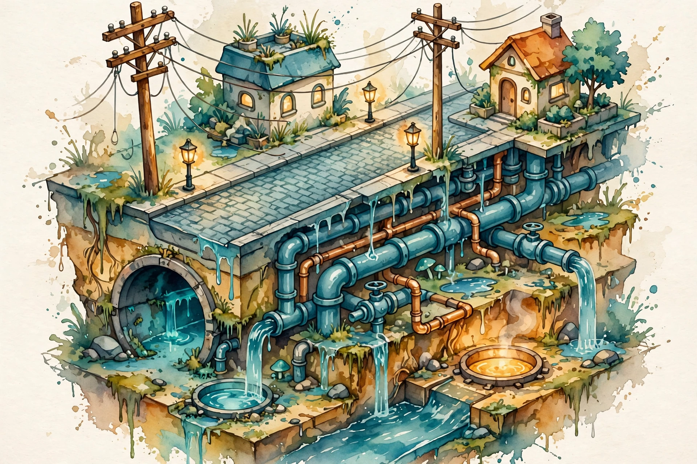

Conversations with Tyler · Episode companion
Any Austin on the Hermeneutics of Video Games
Recorded in June 2025, live and in person, this episode is the funniest and most visual of the series: the world's only great critic of video game infrastructure on noticing, glitches, AI art, and why games are not getting better.

~00:01
The hermeneutics of infrastructure
Cowen introduces Austin as the very best in the world, without doubt, at the hermeneutics of infrastructure within video games. He watches and plays games and explains how the parts fit together: do Liberty City's power lines connect to anything, who are the background people, what are the roads for. Austin's reply:
I like being the best in the world at something that nobody else does.
Any Austin · ~00:02
Cowen's theory of the modern world follows: if you cannot easily state what you are the best in the world at, it is hard to do very well, and the stranger it sounds, the less it holds you back.
On discoverability, Austin puts a number on it: he would bet it is 90 percent the YouTube algorithm, which demolishes everything else at getting content to the people who want it.
Austin's estimate of his own discovery
His stated bet, not measured data.
~00:05
In a fog
Does Austin notice strange things in real cities too, or only in games? He is, he says, somehow simultaneously in a fog while noticing the fog. He just likes looking at stuff. Since making the power lines video, he sees way more utility poles than he used to.
The habit may come from childhood. Games were rationed to 20 minutes a day, and switching off meant starting over, so he ran through the same tiny spaces over and over, learning to make fun in a small area. Maybe that taught him to look at spaces in detail, and he carried it outside.
~00:08
The ideal form
Studying game infrastructure taught Austin something about real infrastructure. We expect the ideal form of a thing to appear in games, and when a utility pole's wire runs the wrong way, we say that cannot be right. But walk outside: real infrastructure is usually wrong too. Putting a city together means colliding with the guy who dug the hole, the contractor, the phone calls. The same collisions shape game development.
The infrastructure you look at in real life is usually wrong.
Any Austin · ~00:09
Getting a paved road with a utility pole to your house takes so much coordination, knowledge, and effort that Austin is passionate about it almost by accident.

~00:10
Glitches in reality
Does studying game glitches make Austin doubt reality is fully knit together? His answer runs through simulation talk: we can extrapolate from what games looked like 30 years ago to what they will look like in 100, and perfect simulation is easy to imagine. But the more interesting question is whether reality's rules, like game rules, have seams. Games run on codified rules and things still go wrong. Maybe there is a real-life equivalent of hacking physics, an interplay of rule sets that creates strange, fascinating things. He says it seems really unlikely that everything works all the time.
Cowen offers his metatheory: all possible universes exist, many have glitches, and we are in one that works well enough to survive. Austin's instinct, as a trained YouTuber, is the anthropic version: if the rules did not cohere well enough for this conversation, we would not be here. The references fly: The Matrix's obvious glitches feel unlikely to him. Cronenberg's EXistenZ gets a recommendation. Cowen calls the subtle version a Thomas Pynchon kind of world.
~00:16
AI art
Austin has almost no interest now in the visual side of AI. AI art grows less interesting as it grows more competent, while LLMs became serious educational tools. The video side is still a little interesting, the strange halfway of a chicken bone turning into a runway model, but the whole field aims to eliminate the surrealness in favor of competence.
That was never where the frontier of cool art was. Competence gives the tools power to replace low-paid stock photography, but it does not make interesting art. Cowen counters with the million-storylines idea: at low enough token cost, run a million variants and let the AI judge which one you will like. Austin grants it eventually, maybe in ten years, but notes the fringes of art are not what the tools prefer, and asks who will look through a billion pictures.
~00:22
Role in history
Cowen says the role in history matters to him. AI art would have its own role, but it would not compete directly with Michelangelo. Austin pushes back with the cup. If the cup is the art and this is me, the value is here somewhere, in the interaction. He can know nothing about a sculpture and prefer it that way.
the value is here somewhere
Any Austin, on where art's value lives · ~00:25
Cowen insists artworks are in dialogue: Rodin makes Brancusi make sense, knowing the theology makes La Pieta make sense. Austin's test: put him in a room of AI-generated sculptures with no history attached. Do they mean nothing? Cowen says much, much less. Austin finds that really interesting.
One Austin argument lands hard: we cannot even tell authentic human art from inauthentic now. Bands made records under duress they did not care about, and we call them authentic anyway. So we are unlikely to be good at detecting AI art either.
~00:28
Lost train of thought
Austin forgets where the conversation jumped in from. He says he lost his train of thought. Cowen calls it a glitch. Austin declares himself a simulation. The episode's best thirty seconds.
~00:29
Tyler's glitch
Cowen asks whether Austin has glitches in his own workflow, the way studying a game's infrastructure reveals the game. His own: the first two or three sentences of every podcast intro, the one part he has to redo. Everything after runs clean. Austin's diagnosis: improvisation works forever, but the moment you put it on paper, the intro becomes the overture and breaks. We can improvise forever and make no mistakes, but the written bit fails.
~00:31
Favorite infrastructure
Cowen's favorites: bridges, ports, harbors. Austin's: the stuff we do not see. Sewage is pretty crazy to him, that we took care of all of that. Energy infrastructure fascinates him. Nuclear power plants are awesome, really cool, and we should build more of them, for the aesthetics, honestly. Just build the cooling towers. Forget the power. Put in a steam thing so you can see the steam. Do not even install turbines.
Cowen: you do not need the power, just build the thing, that is why it is an artwork. Austin agrees. If you raised a baby in a box and showed them a cooling tower at eighteen, they would love it with no historical context at all. Cowen disagrees: they would love it less than Austin does.
~00:34
Games stay the same
How much better will games get in twenty years? None. No better. This is a huge pet peeve of Austin's. They will not get worse either. They will stay the same. His claim: once a medium's nascent period resolves, art does not get qualitatively better. Art is good all the time, everywhere, always. The value of Red Dead Redemption II, in the aggregate, is not that much more impactful than playing The Legend of Zelda in 1984 on the NES. Games got more complicated and vastly more expensive. The fun stayed.
Austin's claim: game quality over time
His argument, stylized. Not a measurement.
~00:36
Canonical games
Cowen reports that many people tell him we are not creating canonical games at the rate we used to. Austin pushes back hard and calls out the many-people-are-saying move. His exhibits: Minecraft, from 2011 to 2014 depending on how you count, which blew open what games could be, and The Legend of Zelda: Breath of the Wild from 2017, which revolutionized again. Cowen says those are a long time ago now. Austin: if the claim is a declining distribution, then draw the graph.
He grants part of the decline story: demand is down since the pandemic, and the collapse is concentrated in giant AAA games that were in a bubble for ten to fifteen years. The bubble did not even pop. It is just coming down.
~00:42
Football and theater
Part of the confusion is the category. Fortnite, VALORANT, Counter-Strike are video games, and they are also competitive, long-lasting spectacles. Calling them video games alongside Zelda is like grouping football in with theater. Same medium, different cultural object. The revenue statistics everyone repeats, that games are bigger than movies and music combined, were always a red flag: the audience for serious game consumption is probably closer to books than to television, because interactivity is a high barrier to entry.
~00:44
Commentary culture
Could commentary become bigger than the games? With the NBA it already has: six hours of podcasts, no game watched all week. Austin guesses we are probably there with games too. But the value system of game commentary bothers him. Everyone cares about exactly the same things: frame rates, settings, technical trivia nobody would discuss about film. Nobody talks about the sampling rate of a song. They talk about how it made them feel.
There are more commentators than games.
Any Austin · ~00:46
His goal, stated plainly: show people it is not inherent that games must be discussed in these technical, narrative-obsessed, comparative terms. Stop saying every review is this game plus that game. Say what it made you feel, and say what it is. Literally, what are we looking at.
~00:50
Hydrology students
One of Austin's tertiary goals: get hydrology master's students up by 3 percent, 4 percent. Get engineering college admissions up the same. It is an excellent veneer. Underneath, the videos are a mindfulness exercise. The infrastructure talk, the adopted systems of values, are second order. First order: learn to look at things and use your brain. Notice what is actually there.
~00:51
VR
Is Austin bullish on virtual reality? No, not economically, because the barrier to entry is too high and development is complicated and annoying. His evidence is personal: he played Resident Evil 4 on the GameCube in 2002, on the Wii in 2007, and again on the Meta Quest 2 about three years ago. He took the headset off and thought about it now equally as immersive. Both times he felt like he was in the game. What is the point? Why even put the thing on?
Playing Zelda in 1984, you felt like you were there. Playing Half-Life: Alyx on the Valve Index, you pick cups up and throw them around. At the end of the day, basically the same amount of fun.
~00:54
Oral culture
Are we moving toward a more oral culture? Austin thinks podcasts make the case more than YouTube, but yes: people do not like to read now, and talking reaches them. He does not fear that leaving print means leaving analysis. That gets cause and symptom backward. It falls on people to choose to think.
His own videos model the choice. He recently spent a whole video arguing the hydrology of Morrowind, then ended by saying: flip the interpretations and there is an equally good argument for the exact opposite. The point is not getting it right. The point is to learn that we can be analytical, to learn that we can use our brains.
~00:56
New Orleans food
The best food in New Orleans? Austin's hot take: New Orleans is very good at New Orleans foods. Gumbo, jambalaya, crawfish, go there. Want Thai, burritos, Chinese food? Not very good. On the whole, the average quality is not good except for the specialties. He only eats fish, which is great down there.
~00:57
Secret sauce
What makes him a great YouTuber? Austin refuses to know. All he should have in his head is that the current video will be the best video he could possibly make. The less he understands his own inner machinations, the better, because artists who learn what their thing is fly off a cliff. They become so much worse. Parodies of themselves.
The less you know about how you do what you do, the better.
Any Austin · ~00:57
~00:58
What's next
He has shot himself in the foot, he says, by leaning so far into the infrastructure reading that people think it is the point. Tons of channels now copy the surface: what are the housing prices in this game, what is the economy like. He needs to rebalance toward the real goal: learning how to think, learning how to be analytical. The games and the infrastructure are the vehicle, not the point.
~00:59
Polymath
Austin gets to ask questions now. First, a side note: people call Cowen a polymath, and the AI summary called Austin one too, so he looked it up. Cowen: it is a meaningless term. Someone who knows five things rather than one or two.
~01:01
The correlation question
Austin's real question: great films, games, albums often come from people who, in conversation, do not seem that intelligent or compelling. Is there a correlation between making great work and being an interesting person? Cowen's answer: the world is more meritocratic than he once thought, and the successful mostly deserve it. Also selection: the best interviews are with people not much in the public eye, who will actually say what they think, and who must have something going for them to get on the show at all. Like the NBA, where taller players are worse at free throws but play anyway.
Austin finds it hopeful: you do not have to be a very interesting, compelling person to do something truly great. Cowen: it is hopeful for the interesting people too, because they have a clearer field.
~01:03
Staying sharp
Why so many interviews lately? Cowen: he likes to listen and to talk, and at 63 it is important to do something not to degenerate. Also, he records himself for the AIs: with enough online writing and podcasts, the AIs will have a pretty good picture of him, and he will be more real to them, and they will like him more and take better care of him.
~01:06
Space Invaders
Cowen presses him on old arcade games, then confesses he liked Space Invaders much more than Pac-Man, which felt too mechanical, not strange enough. Austin agrees: Pac-Man invites optimization, while Space Invaders has a mushiness, no clear optimal choice in every moment. His new goal, on the record: make a video about Space Invaders or Pac-Man that gets millions of views and changes how we think about them, because those games are beautiful, underappreciated, meaningful, and they tell us about ourselves with a hundred lines of code.
~01:07
Watch the episode
The full 67-minute conversation, recorded June 2025, live and in person.
Nuggets of wisdom
- Be the best in the world at something nobody else does.
- Ninety percent of discovery is the YouTube algorithm, by Austin's own estimate.
- Real infrastructure is usually wrong. The ideal form is the exception.
- Getting a paved road with a utility pole to your house takes enormous coordination.
- Reality's rules may not all fit together. Some imperfection is inevitable.
- AI image tools trend toward competency, and competency was never where the frontier of cool art was.
- Art lives in the interaction between you and it, not in its history.
- Nobody can tell authentic art from inauthentic, so AI art will pass too.
- Improvisation is flawless. The memorized intro is the glitch.
- Nuclear cooling towers are beautiful. Build them for the aesthetics.
- Games are not getting better. Art is good all the time, everywhere, always.
- Red Dead Redemption II is not much more impactful than Zelda in 1984.
- If the decline claim is real, draw the graph.
- Fortnite and Zelda are as different as football and theater.
- There are more commentators than games, and their values are all the same.
- First order: learn to look at things. Infrastructure is second order.
- VR did not make Resident Evil 4 better. You feel like you are there either way.
- The point is not getting it right. The point is to learn to use your brains.
- The less you know about how you do what you do, the better.
- Someday he will show the world that Space Invaders is about the human condition.